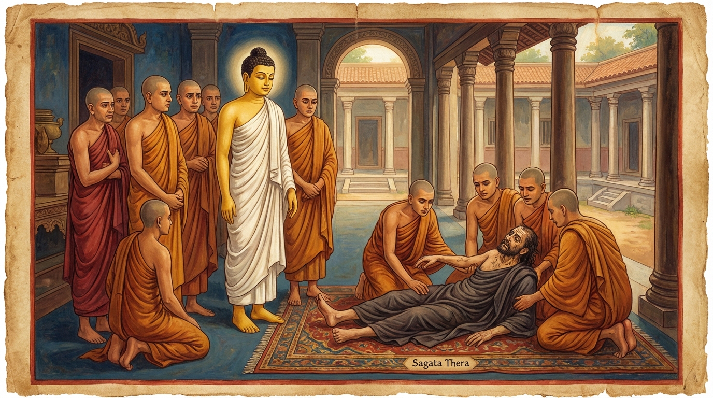

1. සුරාපාන ජාතකය (81)
“අපායිම්හ අනච්චිම්හ” යන මේ දේශනාව බුදුරජාණන් වහන්සේ කොසඹෑ නුවර ඇසුරු කොට ඝෝෂිතාරාමයේ වැඩ වසන කල්හි, සාගත තෙරුන් අරභයා දේශනා කළ සේක. බුදුරජාණන් වහන්සේ සැවැත් නුවර වස් වැස චාරිකාවෙහි වඩින අතර භද්දවතිකා නම් නියම් ගමට පැමිණි කල්හි; ගොපල්ලෝ ද, පශු පාලකයෝ ද, ගොවියෝ ද, මගියෝ ද බුදුරජාණන් වහන්සේව දැක වැඳ, “ස්වාමීනි, භාග්යවතුන් වහන්ස, අම්බතිත්ථයට නො වැඩිය මැනව. අම්බතිත්ථයෙහි ජටිලයාගේ අසපුවෙහි අම්බතිත්ථික නම් වූ ඝෝර විෂ ඇති, (දැක්මෙන් හා සුළඟින්) වහා විෂ පැතිරෙන නාගයෙක් වෙසෙයි. ඔහු භාග්යවතුන් වහන්සේට පීඩා කරනු ඇතැ”යි වළක්වා ලූහ. බුදුරජාණන් වහන්සේ ඔවුන්ගේ කථාව නො ඇසුණාක් මෙන්, ඔවුන් තෙවරක් ම වළක්වද්දීත් එහි වැඩම කළ සේක.
එහි දී බුදුරජාණන් වහන්සේ භද්දවතිකා නියම් ගමට නුදුරින් වූ එක්තරා වන ලැහැබක වැඩ වාසය කළ සේක. එසමයෙහි බුද්ධ උපස්ථායක වූ, පෘතග්ජන සෘද්ධියෙන් යුක්ත වූ සාගත නම් තෙරුන් වහන්සේ, ඒ අසපුවට එළැඹ, ඒ නා රජු වසන ස්ථානයෙහි තණ ඇතිරියක් පනවා පර්යංකයෙන් වැඩ සිටි සේක. නාගයා (තමාට නො සැලකීම ගැන) ක්රෝධය ඉවසාගත නො හී දුම් පිට කළේය. තෙරුන් වහන්සේ ද දුම් පිට කළ සේක. නාගයා ගිනි පිට කළේය. තෙරුන් වහන්සේ ද ගිනි පිට කළ සේක. නාගයාගේ තෙද තෙරුන්ට බාධා නො කළේය. එහෙත් තෙරුන්ගේ තෙද නාගයාට පීඩාවක් විය. මෙසේ ඒ තෙරුන් වහන්සේ සුළු වේලාවකින් ඒ නා රජු දමනය කොට, තෙරුවන් සරණ හා සිල්හි පිහිටුවා බුදුරජාණන් වහන්සේ වෙත වැඩම කළ සේක.
ශාස්තෲන් වහන්සේ භද්දවතිකාවෙහි කැමැති පරිදි වාසය කොට කොසඹෑ නුවරට වැඩම කළ සේක. සාගත තෙරුන් විසින් නාගයා දමනය කළ බව මුළු ජනපදය පුරා පැතිරිණි. කොසඹෑ නුවර වැසියෝ බුදුරජාණන් වහන්සේට පෙරගමන් කොට, බුදුරජුන් වැඳ, සාගත තෙරුන් වෙත එළැඹ, වැඳ, එකත්පස් ව සිට මෙසේ කීවාහුය. “ස්වාමීනි, යමක් ඔබ වහන්සේලාට දුර්ලභ නම් ඒ වදාළ මැනවි. එය අපි පිළියෙල කර දෙන්නෙමු.” තෙරුන් වහන්සේ නිශ්ශබ්ද වූ සේක. එහෙත් ෂඩ්වර්ගික භික්ෂූහු මෙසේ කීවාහුය. “ඇවැත්නි, පැවිද්දන්ට කාපෝතිකා නම් (පරෙවි ඇස් පැහැති) සුරාව දුලබ ද වෙයි, මනාප ද වෙයි. ඉදින් ඔබලා තෙරුන් වහන්සේට පැහැදුනාහු නම් කාපෝතිකා නම් සුරාව පිළියෙල කර දෙනු මැනව.” ඔවුහු ද “යහපතැ”යි පිළිගෙන, පසුදා දානය පිණිස බුදුරජුන්ට ආරාධනා කොට, නගරයට පිවිස, තම තමන්ගේ නිවෙස්වල “තෙරුන් වහන්සේට දෙන්නෙමු”යි කාපෝතිකා සුරාව මැනවින් පිළියෙල කරවා, තෙරුන්ට ආරාධනා කොට ගෙයක් පාසා ඒ පැහැදුණු (සුරා) පානය පිළිගැන්වූහ. තෙරුන් වහන්සේ ද එය පානය කොට සුරා මදයෙන් මත් ව, නගරයෙන් නික්මෙන අතර දොරටුව අභියස වැටී, දොඩවමින් (විලපනය කරමින්) වැතිරුණේය.
බුදුරජාණන් වහන්සේ බත් කිස නිමවා නගරයෙන් නික්මෙන්නාහු, ඒ අයුරින් වැතිරී සිටින සාගත තෙරුන් දැක, “මහණෙනි, සාගතව අල්ලා ගනිව්” යැයි වදාරා භික්ෂූන් ලවා ගෙන්වාගෙන ආරාමයට වැඩිය සේක. භික්ෂූහු තෙරුන්ගේ හිස තථාගතයන් වහන්සේගේ පාමුල සිටින සේ කොට වැතිර වූහ. හෙතෙම පෙරළී පාදයන් තථාගතයන් වහන්සේට අභිමුඛ වන සේ කොට වැතිරුණේය. බුදුරජාණන් වහන්සේ භික්ෂූන්ගෙන් විචාළ සේක. “මහණෙනි, කිම, සාගතයන් තුළ මා කෙරෙහි යම් ගෞරවයක් පෙර පැවතියේ ද දැන් එය තිබේ ද?” “ස්වාමීනි, නැත.” “මහණෙනි, අම්බතිත්ථික නාග රාජයා කවරෙක් දමනය කළේ ද?” “ස්වාමීනි, සාගත තෙරුන් වහන්සේය.” “මහණෙනි, දැන් සාගතයන්ට දිය බරියෙකු හෝ දමනය කිරීමට ශක්තියක් තිබේ ද?” “ස්වාමීනි, එය නො වේ ම ය.” “මහණෙනි, යමක් පානය කොට සිහි විකල් වේ ද, එවැනි දෙයක් පානය කරන්නට සුදුසු ද?” “ස්වාමීනි, නුසුදුසු ය.” ඉක්බිති භාග්යවතුන් වහන්සේ තෙරුන් වහන්සේට දොස් පවරා, භික්ෂූන් අමතා, “රහමෙර පානය කිරීමේ දී පාචිත්තිය ඇවැත් වේ” යැයි ශික්ෂා පදය පනවා, හුනස්නෙන් නැඟී ගන්ධ කුටියට වැඩම කළ සේක.

ධර්ම සභාවෙහි රැස්වූ භික්ෂූහු සුරාපානයේ දොස් කථා කළහ. “ඇවැත්නි, මේ සුරාපානය නම් වහා මහත් දොස් උපදවන්නේය. යම් හෙයකින් ප්රඥා සම්පන්න වූ, සෘද්ධිමත් වූ සාගත තෙරුන් පවා ශාස්තෲන් වහන්සේගේ ගුණ මාත්රයක් හෝ නො හඳුනන තත්ත්වයට පත් කළේය.” ශාස්තෲන් වහන්සේ එහි වැඩම කොට, “මහණෙනි, කවර කථාවකින් යුක්ත ව දැන් මෙහි හුන්නාහු ද?” යි විචාරා, “මෙ නම් කථාවකින් යැ”යි කී කල්හි, “මහණෙනි, පැවිද්දන් සුරා පානය කොට සිහි විකල් කර ගත්තේ දැන් පමණක් නොව, පෙර ද එසේ වූයේ යැ”යි වදාරා අතීත කථාව ගෙනහැර දැක්වූ සේක.
අතීතයෙහි බරණැස් නුවර බ්රහ්මදත්ත රජු රාජ්යය කරද්දී බෝසතාණන් වහන්සේ කාසි රට උසස් බ්රාහ්මණ කුලයක ඉපිද, වැඩි වියට පැමිණි පසු ඍෂි පැවිද්දෙන් පැවිදි ව, අභිඥා හා සමාපත්තීන් උපදවා, ධ්යාන සුවයෙන් කල් ගෙවමින්, පන්සියයක් අතවැසියන් පිරිවරා හිමාල වනයෙහි වාසය කළහ. ඉක්බිති වස් කාලය පැමිණි කල්හි අතවැසියෝ මෙසේ කීවාහුය. “ආචාර්යයෙනි, මිනිස් වාසයට ගොස් ලුණු ඇඹුල් සේවනය කොට (නැවත) එන්නෙමු.” “ඇවැත්නි, මම මෙහි ම වාසය කරන්නෙමි. ඔබලා ගොස් (ලුණු ඇඹුල් සේවනයෙන්) ශරීර සතපවා ගෙන, වස් කාලය ගතකොට එනු මැනව.” ඔවුහු “යහපතැ”යි ආචාර්යවරයා වැඳ බරණැස් නුවරට ගොස් රජ උයනේ වාසය කොට, පසු දින නුවරින් පිටත දොරටු ගම්හි පිඬු පිණිස හැසිර, සුවපත් ව (ආහාර ගෙන), ඊට පසු දින නගරයට පිවිසියහ. මිනිස්සු සතුටු සිත් ඇත්තාහු භික්ෂාව දුන්හ. දින කිහිපයක් ගිය තැන රජුට ද මෙසේ සැල කළහ. “දේවයන් වහන්ස, හිමාල වනයෙන් පන්සියයක් ඍෂිවරු අවුත් උයනෙහි වාසය කරති. ඔවුහු උග්ර තපස් ඇත්තෝය, මැනවින් සන්සිඳුණු ඉඳුරන් ඇත්තෝය, සිල්වත්හුය.” රජතුමා ඔවුන්ගේ ගුණ අසා උයනට ගොස් වැඳ, පිළිසඳර කථා කොට, වස් කාලය වූ සාර මස එහි ම වාසය පිණිස පොරොන්දු කරවාගෙන ආරාධනා කළේය. ඔවුහු එතැන් පටන් රජ ගෙදරින් ම වළඳා උයනෙහි වාසය කරති.
ඉක්බිති එක් දිනක් නගරයෙහි සුරා නැකත් නම් උත්සවයක් විය. රජතුමා “පැවිද්දන්ට සුරාව දුර්ලභ ය”යි සිතා බොහෝ වූ උසස්ම වර්ගයේ සුරාව දීමට සැලැස්වීය. තාපසවරු සුරා පානය කොට උයනට ගොස්, සුරා මදයෙන් මත් වී, සමහරු නැඟිට නැටූහ, සමහරු ගැයූහ. මෙසේ නටා, ගයා, කද මලු ආදිය (තැන තැන) දමා නිදාගෙන, සුරා මදය සිඳුණු කල්හි පිබිදී, ඒ තමාගේ විපරීත ස්වභාවය දැක, “අප විසින් පැවිද්දන්ට නො සරූප දෙයක් කරන ලදැ”යි හඬා වැළප, “අපි ආචාර්යවරයාගෙන් වෙන් වූ බැවින් මෙබඳු පාප කර්මයක් කළෙමු” යි, එෙකණෙහි ම උයන අත්හැර හිමවතට ගොස්, (විසිරී තිබුණු) පිරිකර තැන්පත් කොට, ආචාර්යවරයා වැඳ හුන්හ. (බෝසතාණන් වහන්සේ විසින්) “දරුවනි, කිම, මිනිස් පියසෙහි ආහාරයෙන් ක්ලාන්ත නොවී සුව සේ විසුවෝ ද? සමගියෙන් විසුවෝ ද?” යි විචාරන ලද්දාහු, “ආචාර්යයෙනි, සුව සේ විසුවෙමු. එහෙත් අපි නො පිය යුත්තක් පානය කොට, සිහි විකල් ව, සිහිය පිහිටුවා ගත නො හැකි ව, නැටුවෙමු ද ගැයුවෙමු ද” යැයි එම කරුණ සැල කරමින් මේ ගාථාව කීවාහුය.
“අපි (සුරා) බීවෙමු, (අත් ලෙළවමින්) නැටුවෙමු, (මහ හඬින්) ගැයුවෙමු, (පසුව) හැඬුවෙමු ද, සිහි විකල් කරවන (සුරාව) බී, (යම් හෙයකින්) අපි වඳුරන් නො වීමු ද, එය ම මැනවි යි.”
එහි “අපායිම්හා” යනු සුරාව බීවෙමු. “අනච්චිම්හා” යනු එය පානය කොට අත්පා ලෙළවමින් නැටුවෙමු. “අගායිම්හා” යනු කට ඇර, දිගු හඬින් ගායනා කළෙමු. “රුදිම්හ ච” යනු (සිහි එළැඹි පසු) නැවත විපිළිසර වී “අප විසින් මෙබඳු දෙයක් කරන ලදැ”යි හැඬුවෙමු. “විසඤ්ඤීකරණිං පිත්වා, දිට්ඨා නාහුම්හ වානරා” යනු මෙබඳු වූ සංඥාව විනාශ කරන බැවින් ‘විසඤ්ඤීකරණී’ නම් වූ සුරාව බී, “යම් හෙයකින් අපි වඳුරෝ නො වීමු ද, ඒ කාරණය ම යහපතැ”යි (සතුටු වෙමු). මෙසේ ඔවුහු තමන්ගේ අගුණ කීවාහුය.
බෝධිසත්ත්වයෝ “ගුරු ඇසුර නැත්තවුන්ට මෙබඳු දේ සිදුවන්නේ ම ය”යි ඒ තාපසවරුන්ට දොස් පවරා, “නැවත මෙවැන්නක් නො කරව්” යැයි ඔවුනට අවවාද දී, නො පිරිහුණු ධ්යාන ඇත්තාහු බ්රහ්මලෝකයෙහි උපන්හ.
ශාස්තෲන් වහන්සේ මේ ධර්ම දේශනාව ගෙනහැර දක්වා ජාතකය ගළපා වදාළ සේක. මෙතැන් පටන් “පූර්ව අපර සන්ධි ගළපා” යන්න (වචනයෙන්) නො කියන්නෙමු. එසමයෙහි තාපස සමූහයා මේ බුද්ධ පිරිස වූහ. ගණ ශාස්තෘ වූයේ මම ම වෙමි.
සුරාපාන ජාතක වර්ණනාව යි. (පළමු වැනි ය).